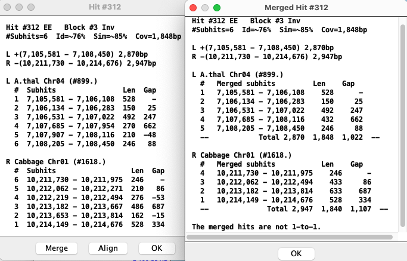
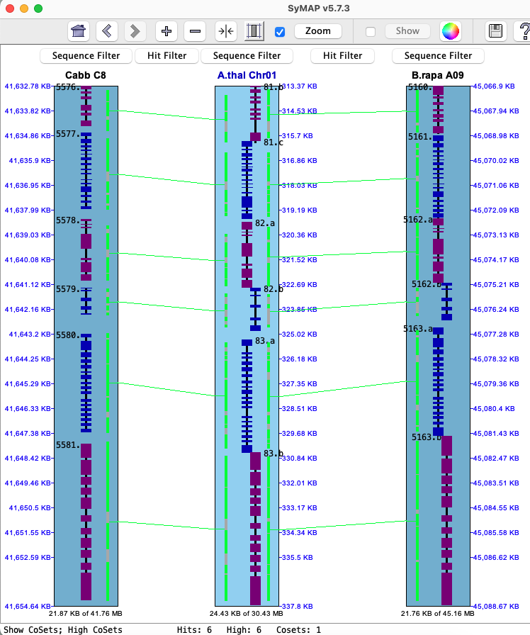

| Collinear sets | Hit popup | 3-chr conserved |
Collinear sets
Using the
|
In the image on the right, two different sets are shown where the pink highlighted hits is the 1st set,
green is the 2nd; these are Color Wheel
A collinear set either has all hits/genes to the same strand (+/+, -/-) or different (+/-, -/+). In the image on the right, all genes in both sets are on different strands. Note: if
The collinear set algorithm does not consider the amount of overlap of the hit to a gene, or the similarity of the hit sequences. Sometimes a hit looks like it overlaps a gene, but the gene is actually in the gap of a clustered hit, so is not a gene hit. |

|
The image below shows a collinear set of 4 genes and 6 brown hit-wires that are not part of the set. The following explains them, using the symbols g0 (hits 0 genes), g1 (hits 1 gene), g2 (hits paired genes, at least one on each chromosome).
|
Sometimes two genes look as one, so the |
Hit popup | Go to top |
- Both lists are sorted by start coordinate.
- The # column in the two tables align to each, e.g. the rows #2 align to each other.
- The sequence name that is alphabetically lower (e.g. arab<cabb) is the query and the other is the target. The query is numbered 1-N; the target is ordered to match the query.
- Two subhits may overlap (Gap<=0) on one chromosome but not the other.
Merge
|  | In the merge view, hits with gap<=0 are merged with the hit they overlap with.
The numbered hits are no longer 1-to-1, i.e. they do not necessarily align to each other like they do in the un-merged view. The merge view corresponds better to the visual view on the 2D track. The existence of the |
Order
3-chr conserved
Both theChromosome Explorer
|
The
Selecting |

|
|

|
The
There are two issues confusing the results:
- One side g2 filter:
- The algorithm runs on the set of filtered hits. A g2 hit to a reference gene may be filtered in one chr-pair and not the other, making it appear to be a g1 hit.
- In this case, the filtered hit will be forced displayed using the
Highlight2 color (default pink). - For example: the lower middle image where the arrow is pointing.
- If both sides are filtered, neither will be shown.
- g1 possible g2:
- Both chr-pairs can have a hit to the same reference gene, where one chr-pair has a g2 hit-wire and the other has a g1 (but a possible g2 if it is missing the gene annotation).
- In this case, the g1 hit-wire will be displayed in red.
- For example: the lower right image where the arrow is pointing.
- If the g2x1 hit is filtered, the adjacent g1 hit-wire will not be highlighted red.
Caveats of display: Nothing is refreshed or recalculated!
- Suggestion: Set the filter from the full view, then you can zoom in and back out and the highlight will
remain. Likewise, set the
Gene# visible from the full view. - If the highlighting looks wrong after zooming, open
Sequence Filter , clickNone and re-clickg2x2 org2x1 .
Caveats of algorithm:
- For g2x2, say it shows genes A-B-C are conserved. The algorithm only checks the A-B hit and B-C hits exist, but does not check the A-C hit.
- There may be different numbers of highlighted genes on the different tracks or hit-wires between tracks. This is because multiple hits can align to a gene, and one gene can align to two different opposite genes.
- When there are overlapping genes, a hit is assigned to just one of them, which causes some conserved genes to have incorrect pairing.
- There are occasional tiny hits that just barely overlap genes; the current algorithm marks them as conserved genes. Also, the hits may align strictly in introns (especially for the long introns of mammalian genomes); the current algorithm marks these as conserved.
Queries
→ For a query result, Report is only way to view more than two species in a query row.→ As shown here, it is possible to bring up the 2D display with 3 chromosomes from the query table.
|
Select two rows with the following requirements:
(1) Each row must have two genes.
(2) There must be a shared gene.
Select View 2D with either the Same species
Atha will be the reference since Gene# 5468 is listed in both rows, and Brap chromosomes 7 and 9 will be on its left and right. 2D image not shown. |  |

{kind=link}
{kind=link}
{kind=link}
{kind=link}
{kind=link}
{kind=link}
{kind=link}
| Go to top |
Email Comments To: symap@agcol.arizona.edu